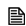
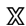

OU Moodle: Post title, 5kb
Content synchronised
Data has been synchronised. Finish
My Moodle: Post title, 5kb
Content synchronised
OU Moodle: Post title, 0kb
Content has been deleted on OU Moodle
To synchronise put data from My Moodle.
My Moodle: Post title, 5kb
Content has been updated on My Moodle.
OU Moodle: Post title, 12kb
Content has been updated on OU Moodle
To synchronise: put data from My Moodle
or get data from OU Moodle.
My Moodle: Post title, 10kb
Content has been updated on My Moodle.